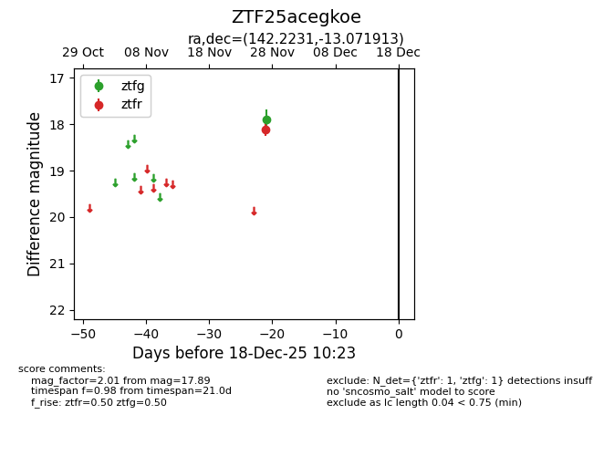
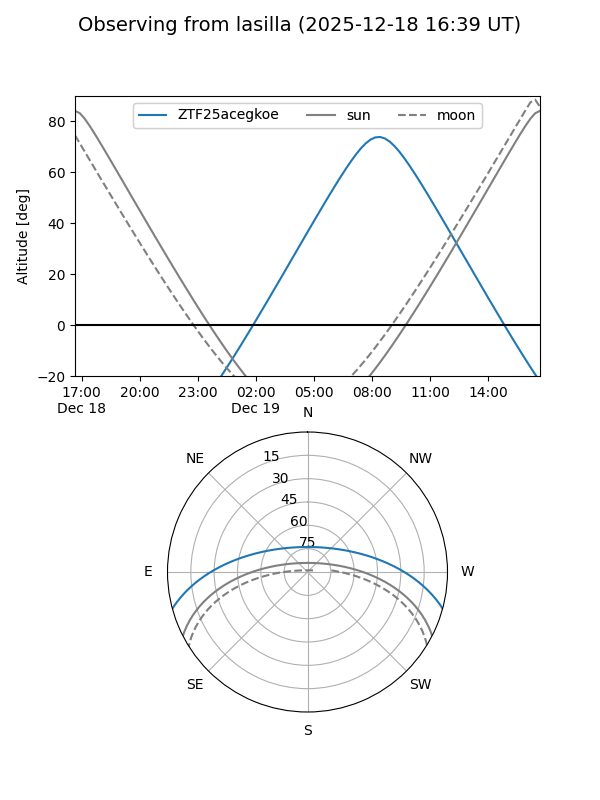
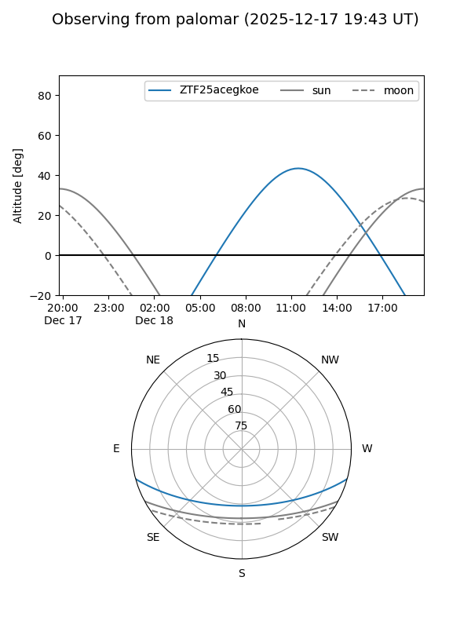

ZTF25acegkoe
Target ZTF25acegkoe at 2025-12-18 11:17
Aliases and brokers:
FINK: fink-portal.org/ZTF25acegkoe
Lasair: lasair-ztf.lsst.ac.uk/objects/ZTF25acegkoe
ALeRCE: alerce.online/object/ZTF25acegkoe
alt names
ZTF25acegkoe (ztf,fink_ztf)
Coordinates:
equatorial (ra, dec) = 142.2231,-13.07191
equatorial (HMS+DMS) = 09:28:53.55,-13:04:18.89
galactic (l, b) = (245.6060,+26.53263)
Photometry
last ztfg=17.89, ztfr=18.12
1 ztfg, 1 ztfr detections
Lightcurve

Visibility


Additional plots